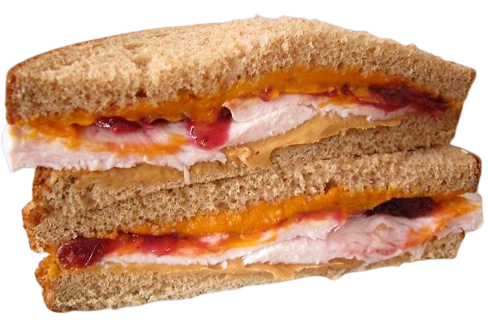
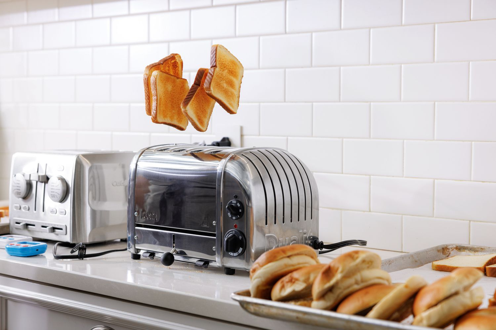
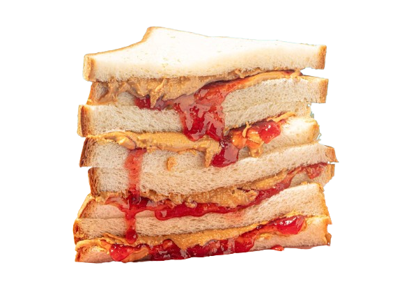

Introduction
The Triple-layer peanut butter jelly and ham sandwich ® is a longtime favorite breakfast item of mine. It is a great "rouser" for the morning, a true dish that will awaken and power you for the rest of your day! Whether you feel tired or depressed, this silly yet impressive sandwich will open you to a journey of fun and happiness. Furthermore, the best part is that this snack can be altered or added on without problems, giving you access to many creative and fun imaginative ideas!
I discovered this fantastic idea back in 2019. In 2024, I attended a (music) camp, in which we often had the option to eat sandwiches. However, there was also a panini press, so I'd usually "upgrade" my sandwich to a panini to enhance the effect. This seems to work well with the recipe I found, so I would suggest improving this improvisatory sandwich if possible. Sometimes the meat we receive will alternate, which made me swap types of meat multiple times. I am glad to say that, so far, all combinations have worked very successfully! Adding additional types of different
Notice: not suitable to those with allergies concerning peanuts!
Ingredients
To create this amazing sandwich, you will need:
- Bread x3
- A packet of peanut butter
- A packet of jelly (any flavor you'd like!)
- Panini ham (amount should be > 2)
- Butter
- A toaster
- BONUS: Panini press

Instructions
As to how you can create this deliciousness, here are my instructions:
- Start defrosting your pieces of ham (1-2 hours in room temperature)
- Toast your three bread sides for the standard duration (2½ minutes, varies depending on your toaster)
- While that is going on, open your two packets of peanut butter and jelly (1½ tbsp for each)
- Mix your peanut butter with your jelly (preferrably in a small bowl)
- Stack your three bread loafs
- Apply a sufficient amount of the mixture to the lower toasted bread loafs (⅓ to the lower loaf and ⅔ to the middle loaf)
- Add a bit of butter atop the mixtures
- Place one piece of ham in the center of each sandwich
- Optional: Push this with the panini press (for approximately 1 minute if you want the best effect)
- ENJOY
